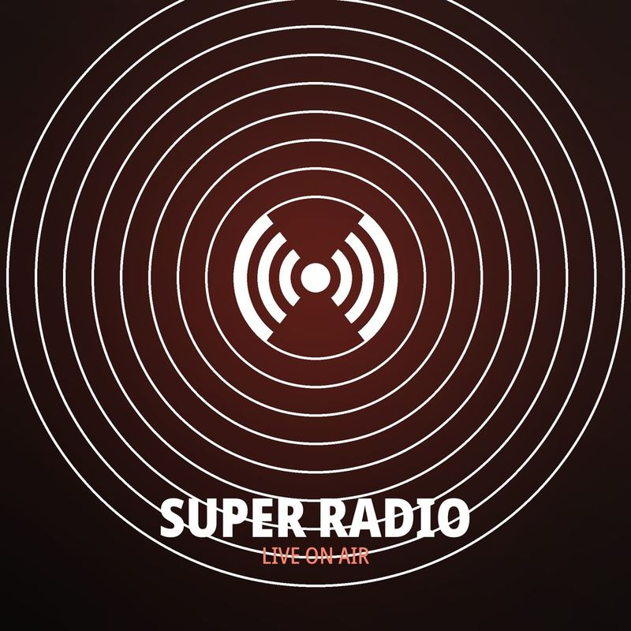

Super Radio — live hitradio, non-stop muziek
On air
Non-stop muziek
Verbinden…
Even geduld
0:00
0:00
Tip: druk op spatie om te starten of te pauzeren.

Speelt nu
De nummers die zojuist voorbijkwamen op Super Radio.
Zojuist gedraaid
Komt eraan
Programma
Wat er vandaag en morgen op de zender staat.
Muzieknieuws
Verse muziekberichten, ververst elke vijf minuten.